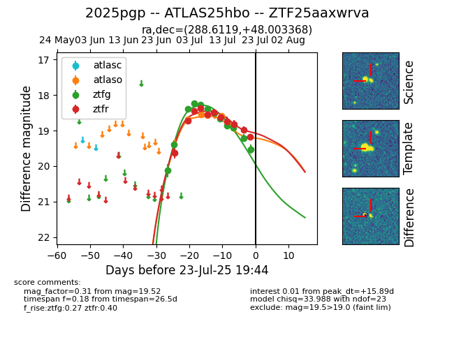

Target ZTF25aaxwrva at 2025-07-23 19:44, see:
FINK: fink-portal.org/ZTF25aaxwrva
Lasair: lasair-ztf.lsst.ac.uk/objects/ZTF25aaxwrva
ALeRCE: alerce.online/object/ZTF25aaxwrva
TNS: wis-tns.org/object/2025pgp
YSE: ziggy.ucolick.org/yse/transient_detail/2025pgp
alt names
ZTF25aaxwrva (ztf,fink)
2025pgp (tns,yse)
ATLAS25hbo (atlas)
coordinates:
equatorial (ra, dec) = (288.6119,+48.00337)
galactic (l, b) = (79.0411,+16.21219)
photometry
last atlaso=18.82, ztfg=19.52, ztfr=19.18
5 atlaso, 12 ztfg, 11 ztfr detections
